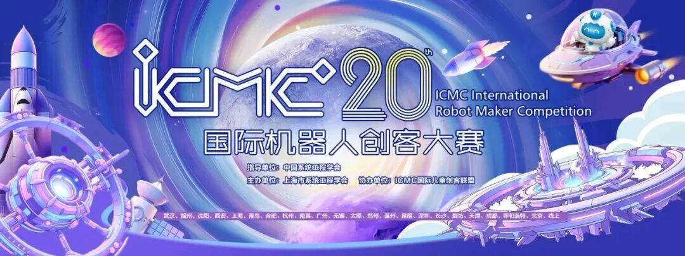
2026第二十届ICMC全面启动
2026第二十届ICMC国际机器人创客大赛即将拉开帷幕。ICMC针对3-14岁少年儿童创客，以鲜明的“单人赛制”和“独立完成”为特色，倡导“创新、独立、勇敢、乐观、友爱”的活动精神，以真实考验和激发选手科技实践能力为目标的校外机器人创新活动。
2015年创办至今，ICMC以亚洲最大的上海科技馆为赛事基地，每年在上海、北京、广州、深圳、武汉、成都、青岛、西安、合肥、长沙、郑州、廊坊、汕头、杭州、贵阳、南昌、福州、沈阳、太原、天津、无锡、线上等设立分站赛，已经成长为极具全国影响力的青少年机器人科创展示交流活动。
指导单位：中国系统工程学会
主办单位：上海市系统工程学会科普委员会
ICMC国际儿童创客联盟
参赛对象
3-14岁 机器人与编程类学员
比赛形式
任务计时赛（总分=任务分+时间分）
赛季主题-轨道空间站大冒险
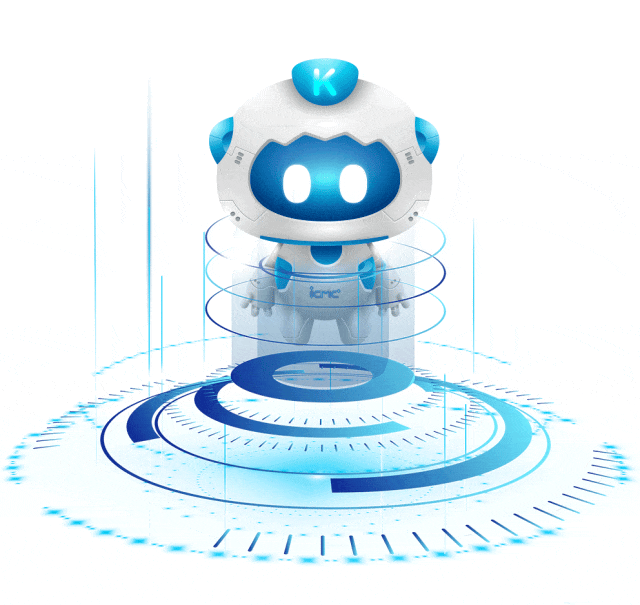
卡卡是一个来自阿尔法星系的工程机器人，它有很多拿手绝活，经常在星际中旅行，帮助各个星球上的人们一起建设家园。有一次它通过时空隧道来到了地球，一下子爱上了这个有趣的地方和地球上的孩子们，并时常带小朋友们一起去其他星球工作和旅行。
史上最大的跨行星轨道空间站即将投入使用，这将为人类深空探测提供一个重要的实验基地。很多最新的空间实验项目将在轨道空间站展开。这一次，小工程师们将要和卡卡一起参与轨道空间站的试运营，并协助完成多个空间实验。赶紧让我们带上装备一起出发吧！！
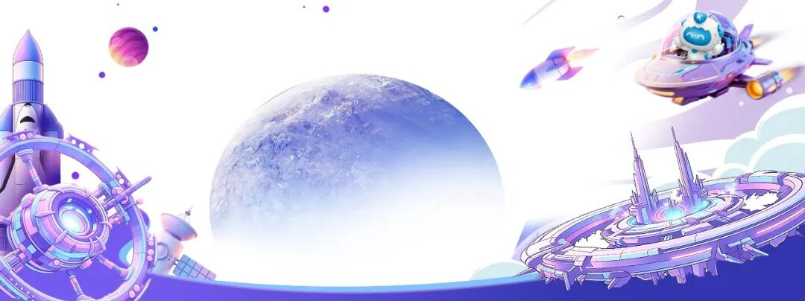
【以下赛项版权归ICMC组委会，侵权必究】
JR组3-5岁：精准转移实验球
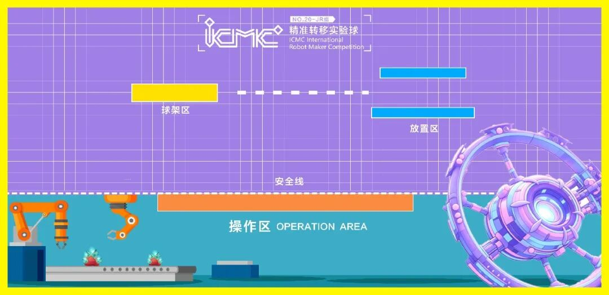
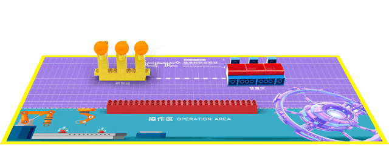
《任务动画示意》
任务背景：
轨道站实验室有一个宇宙射线实验，实验对象就是一些特殊的实验球，需要制作一个独特的工具，能一次性将3枚实验球从实验架上运输到放置区。请制作工具并完成运输！
参赛对象：
单人赛，3-5岁机器人学员
场地器材：
1、场地图纸尺寸为55-114cm(±1cm)。
2、赛桌高度52cm(±3cm)塑料材质。
3、比赛所用零件选手自带，为大颗粒类型：单个零件长宽高均不得超过8cm，数量不限。
4、场地上基础装置及任务物品由比赛组织方提供。
赛场准备：
1、基础装置，实验球架，实验球安置框，安全线，粘贴于赛纸相应位置，任务物品黄色实验球3个（直径40mm乒乓球）放置于实验球架上，位置如图所示，选手不得对基础装置的结构有任何改动。
2、比赛正式开始前，选手将自带的大颗粒积木零件以随机松散状态置于托盘内。
3、赛场默认裁判及选手方位如下图中所示。
比赛过程：
1、裁判发令开始计时，全程不停表，任务环节满分完成或选手主动提出结束比赛时，或总限时10分钟用完时，计时停止。
2、选手根据裁判指令开始比赛，用自带零件搭建一个转移实验球用的运输工具。
3、运输工具搭建完成后，选手运用运输工具将三个实验球从球架上取出，并转移至放置区内的球框中。转移完成后，运输工具必须整体退回到安全线后，任务完成。
4、在运输过程中，选手只能在操作区域一侧桌边进行操作，身体任意部位不得越过安全线进入转移区域内。
5、比赛全程不得改变场上基础装置的结构。任务全程，基础装置、运输工具不得损坏，选手不得用手触碰场上的基础装置及实验球，否则视为本次转移失败，失败后选手需要将三个实验球放回球架，重新进行转移操作。
6、单次任务指一次从球架区域转移至放置区域。每成功转移一个实验球至空球框得1000分，最高任务分为3000分（每次只运一球，分三次运，则只能得1000分）。转移中途若实验球掉落，则该实验球不得分。任务未满分可将三个实验球放回球架，再次尝试任务，多次尝试任务取单次任务最高分为任务得分。
比赛分值：
1、比赛总分=时间分+任务分
2、比赛总限时10分钟，基础分1000分，每用时1秒扣1分。
3、一次性成功转移实验球至框中每个1000任务分，满分3000分。
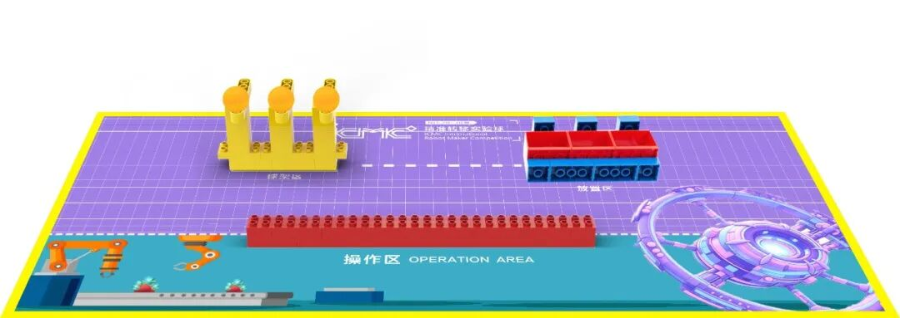
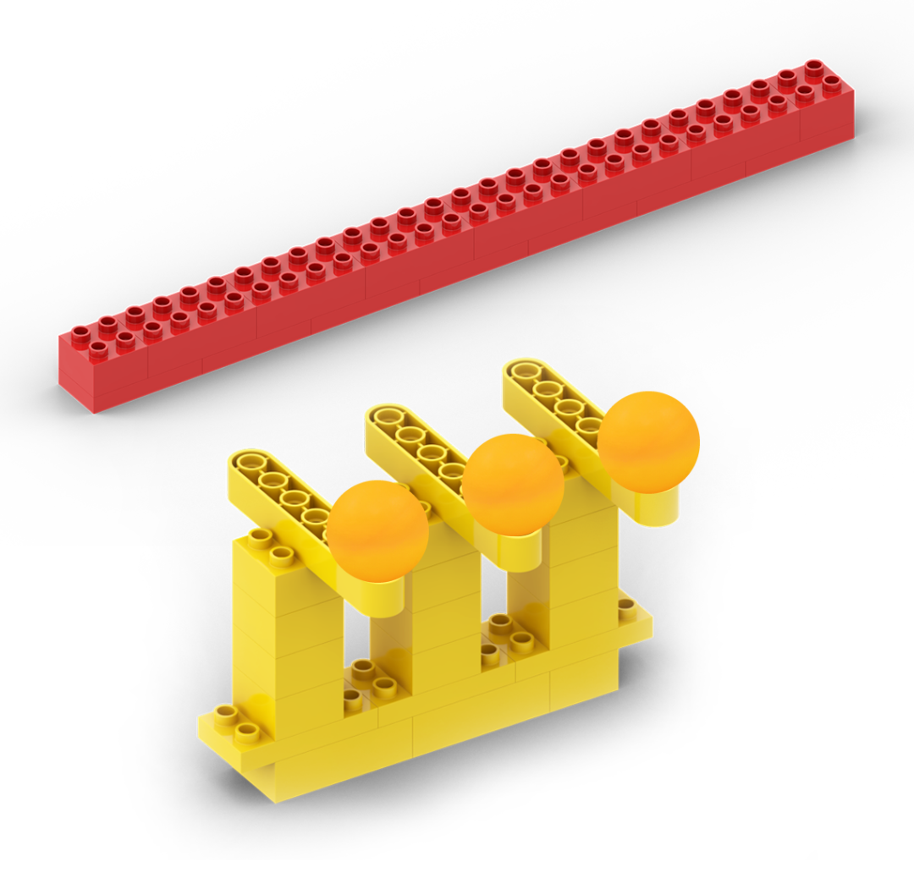
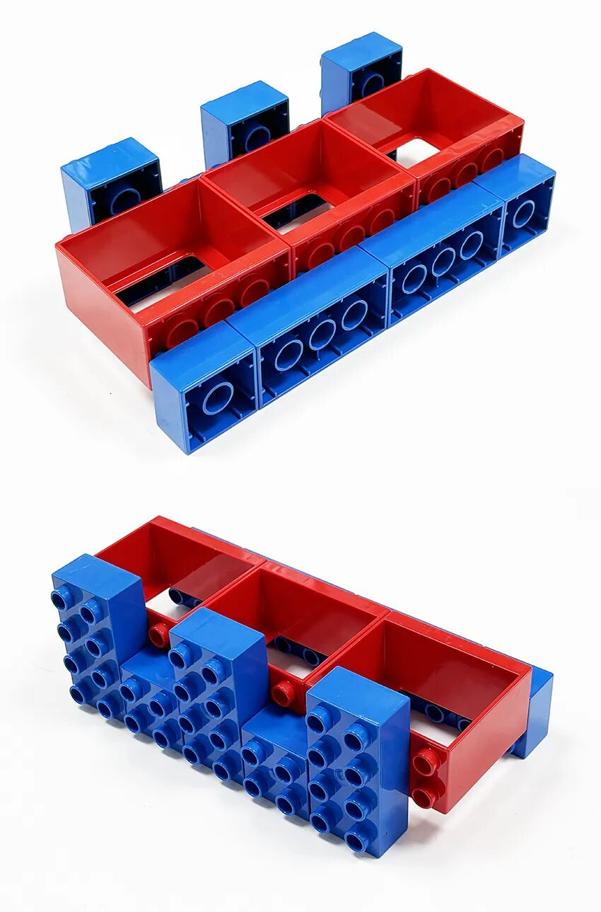
《场地与装置示意图》
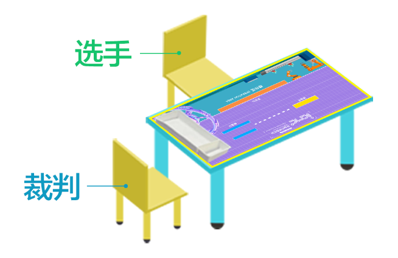
《裁判及选手方位图》
（选手只能在操作区一侧进行比赛，可以自由选择以坐姿或者站姿进行）
机械组5-6岁：机械开启限位器
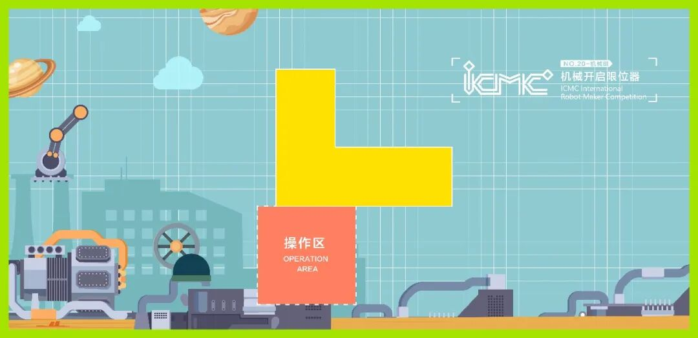
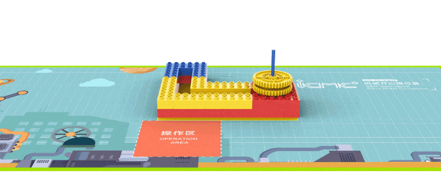
《任务动画示意》
任务背景：
轨道实验室有个高温实验炉，每次打开炉门前，需要将限位器打开。请制作一个机械装置，可以通过手摇来打开限位器。
参赛对象：
单人赛，5-6岁机器人学员。
场地器材：
1、场地图纸尺寸为55-114cm(±1cm)。
2、赛桌高度52cm(±3cm)塑料材质。
3、比赛所用零件选手自带，为大颗粒类型。允许使用线绳或皮筋，但两者在任务期间展开的最大总长度不得超过30cm，线绳两端零件可提前连接（两端连接的零件长度不得超过8cm）。
4、场地上基础装置及任务物品由比赛组织方提供。
赛场准备：
1、基础装置（限位槽）粘贴于赛纸相应位置，任务物品（限位桩）和器材托盘的安装及摆放位置如图所示，选手在比赛开始前不得做任何改动。
2、比赛正式开始前，选手将自带的积木以随机松散状态置于托盘内，线绳两端零件可提前连接。
3、赛场默认裁判及选手方位如下图中所示，如选手需要调整比赛方位，请在比赛前告知裁判调整。
比赛过程：
1、裁判发令开始计时，全程不停表，满分完成任务或选手主动提出终止比赛时，或总限时用完时，结束计时。
2、选手根据裁判指令开始比赛，选手需要从托盘中拿取积木并独立搭建开启装置，实现在操作区通过旋转曲柄操作装置，使限位桩从限位槽的起始端（红色区域）移动到终点端（蓝色区域）。
3、比赛期间选手不得在基础装置（限位槽）上的任何区域进行搭建（限位桩除外）； 选手不得更改，拆解基础装置及任务物品结构。出现违规情况任务不得分。
4、选手搭建的开启装置必须指定一个可旋转的操作曲柄，该曲柄投影必须全程位于操作区范围内。选手搭建完成后，在操作区手动旋转该操作曲柄，作为唯一的动力使限位桩移动位置，不得触碰基础装置及其他任务物品。
5、在任务开始前，限位桩应位于限位槽起始端。选手通过旋转曲柄使限位桩从起始端的位置沿着L型限位槽移动至终点端（限位桩投影完全进入终点端的红色积木范围内），任务完成。
6、选手搭建的开启装置必须为一个稳固整体，并且基座全程坐落于桌面不得位移，在任务过程中及任务完成后所有装置不得有零件散落，否则该次任务不得分；限位桩在移动过程中离开限位槽，该次任务也不得分。
7、任务未完成或任务不得分的情况下，选手可以修改搭建装置，恢复基础装置，并重新进行任务。
比赛分值：
1、比赛总分=时间分+任务分。
2、比赛总限时10分钟，基础分1000分，每用时1秒扣1分。
3、成功完成任务得任务分1500分。
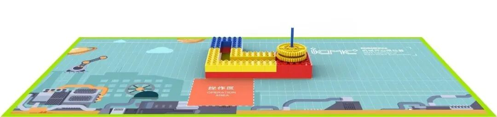
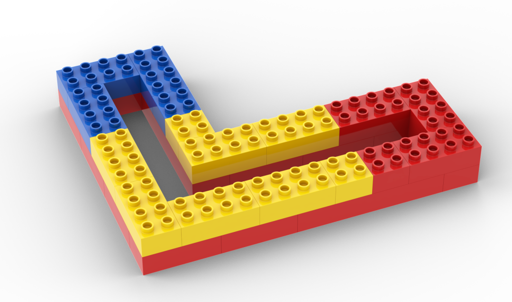
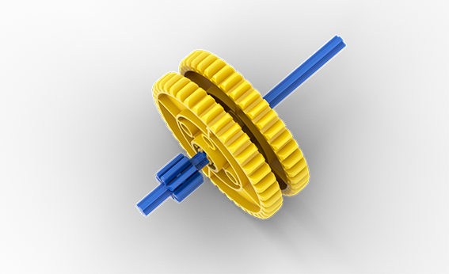
《场地与装置示意图》
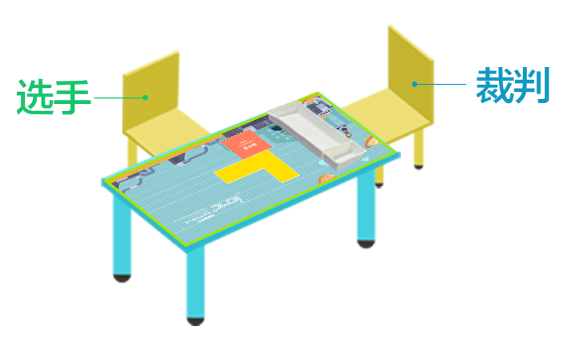
《裁判及选手方位图》
（选手赛前和赛中均可以随意移动椅子位置，可以自行决定在赛桌任意方位，以坐姿或者站姿进行比赛）
动力组6-7岁：同步旋转舱门盘
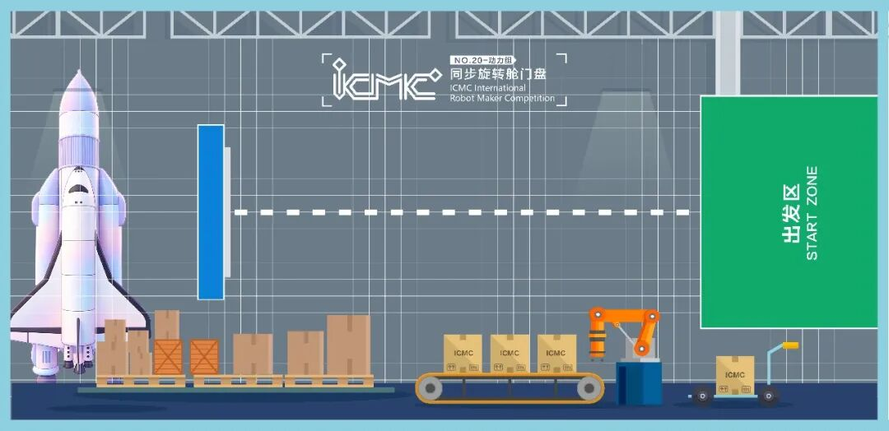
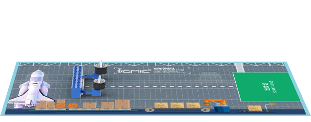
《任务动画示意》
任务背景：
空间站的不同舱室之间由密封性的舱门隔开。为了保证安全，打开这些舱门需要同时旋转两个舱门盘。请为机器人设计一个开门功能，可以同时旋转两个舱门盘。
参赛对象：
单人赛，6-7岁机器人学员
场地器材：
1、场地图纸尺寸为55-114cm(±1cm)。
2、赛桌高度52cm(±3cm)塑料材质。
3、比赛所用零件选手自带，限一个电机输出端口作为唯一动力来源，不得使用编程、遥控操控机器。
4、场地上基础装置及任务物品由比赛组织方提供。
赛场准备：
1、任务物品（舱门盘）初始摆放位置及基础装置（舱门架）粘贴位置如图，选手比赛开始前不得做任何改动。
2、比赛正式开始前，选手将自带积木零件以随机松散状态置于托盘内（轮胎轮毂可以为组合状态）。
3、赛场默认裁判及选手方位如下图中所示，如选手需要调整比赛方位，请在比赛前告知裁判调整。
比赛过程：
1、裁判发令开始计时，全程不停表，任务环节满分完成或选手主动提出结束比赛时，或总限时用完时，计时停止。
2、选手根据裁判指令开始比赛，选手需要自行搭建机器，机器必须是一个稳固连接的完整体，不得有分离结构，启动前整体投影不得超出出发区，整体高度不得超过25cm。
3、选手不得在基础装置或任务物品上进行辅助搭建。
4、选手搭建完机器后，打开电源开关启动任务。机器从出发区出发，自主运行抵达舱门区域后，通过机器上的结构使两个舱门盘能够同时持续转动一周以上得2000分，视为任务结束，之后选手可以手动停止车辆。
5、车辆启动后只能自主完成任务，任务过程中选手不得再触碰车辆、基础装置、任务物品，直至任务完成，否则本次任务不得分。
6、任务未成功情况下，选手可以调整机器，从出发区再次开始任务。 多次尝试任务取单次任务最高分为任务得分。
7、任务期间，若基础装置或机器损坏，则本次任务不得分，选手需自行修复并还原至初始状态，重新从出发区开始任务。
比赛分值：
1、比赛总分=时间分+任务分。
2、比赛总限时10分钟，基础分1000分，每用时1秒扣1分。
3、机器自主运行，成功使舱门盘同时持续转动一周以上，得2000任务分。
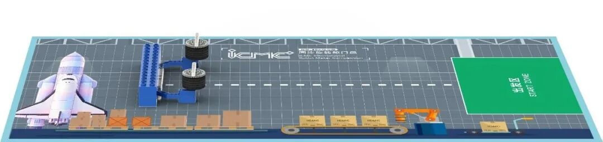
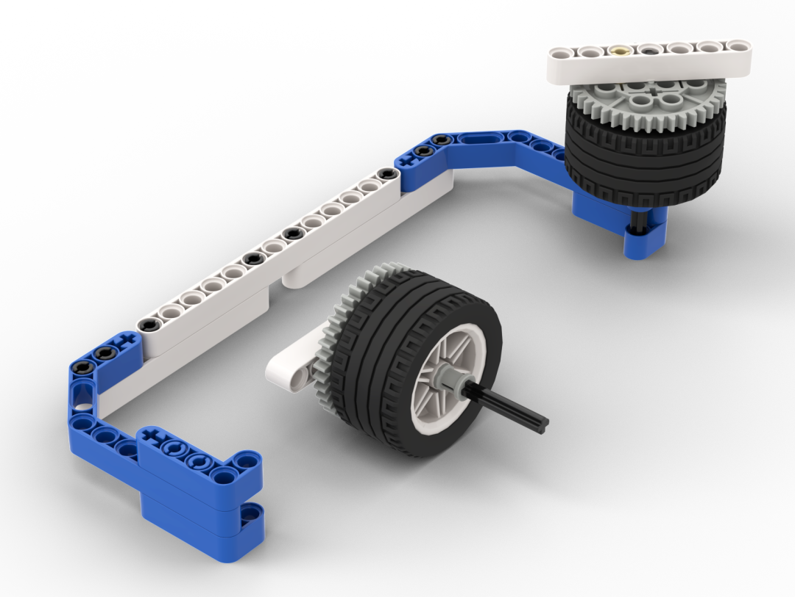
《场地与装置示意图》
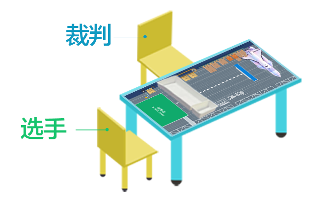
《裁判及选手方位图》
（选手赛前和赛中均可以随意移动椅子位置，可以自行决定在赛桌任意方位，以坐姿或者站姿进行比赛）
感控组7-8岁：自动转移燃料球
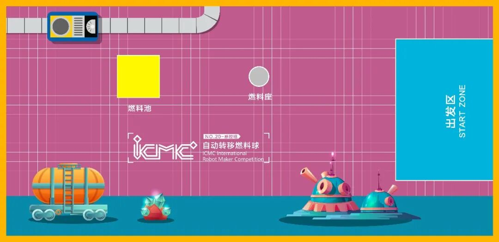
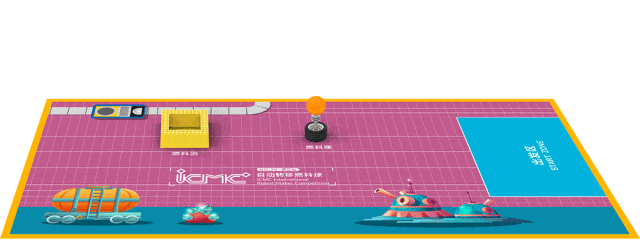
《任务动画示意》
任务背景：
轨道空间站的能源中心，需要定期更换高能燃料球，请设计一款智能机器人，可以自动将燃料球从基座上运输至燃料池内。
参赛对象：
单人赛，7-8岁机器人学员
场地器材：
1、场地图纸尺寸为55-114cm(±1cm)。
2、赛桌高度52cm(±3cm)塑料材质。
3、比赛所用零件及编程设备选手自带，电器零件主机总电压不得超过 6V（四节 AA 电池或等效锂电池），控制端口不超过 4 个。
4、场地上基础装置及任务物品由比赛组织方提供。
赛场准备：
1、任务物品燃料球（40mm乒乓球）位于燃料球底座上，基础装置燃料球底座和燃料池粘贴于赛纸指定位置，如图所示。
2、比赛正式开始前，选手将自带积木零件以随机松散状态置于托盘内（轮胎轮毂可以为组合状态），打开编程软件，先行将主机和软件进行连接。
3、赛场默认裁判及选手方位如下图中所示，如选手需要调整比赛方位，请在比赛前告知裁判调整。
比赛过程：
1、裁判发令开始计时，计时开始后出现任何硬件或软件问题均需选手自己解决，全程计时不停止，任务环节满分完成或选手主动提出结束比赛时，或总限时用完时，计时停止。
2、选手需现场完全独立完成搭建与编程，比赛开始前，主机、软件中无相关程序，选手需新建空白程序界面。选手不得在任务物品上进行辅助搭建。
3、选手确认准备完成后由裁判发令开始比赛并计时。
4、选手完成机器搭建及编程后，进入任务阶段。机器启动前整体投影不得超出出发区，高度不得超过 25cm。启动程序后机器需自主运行，完全驶出出发区，然后将燃料球底座上的燃料球运输至燃料池中（燃料球需与燃料池底部接触），机器返回出发区，自主停止运行，结束任务。
5、任务过程中选手不得触碰机器、程序按键、任务物品，也不得遥控机器，直至机器停止，以停止时状态评定本次任务得分。
6、任务期间，任务物品或机器损坏，则本次任务不得分。机器出发后选手可以选择中途结束本次任务重新出发，过程中如需更改程序，同样需要重新出发，计时不停止，重新出发前，由选手自行复位任务物品至初始状态。
7、多次复位进行尝试，以得分最高的一次任务分为最终得分。
比赛分值：
1、比赛总分=时间分+任务分
2、比赛总限时10分钟，基础分1000分，每用时1秒扣1分。
3、机器停止时，成功放置燃料球得 1000 分（燃料球位于燃料池中，并完全与底部接触），机器成功返回出发区并停止运行得500分（机器全程未离开出发区的不得分），任务最高得分为 1500 分。
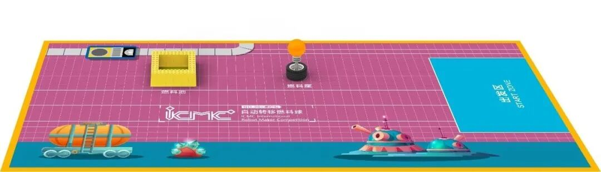
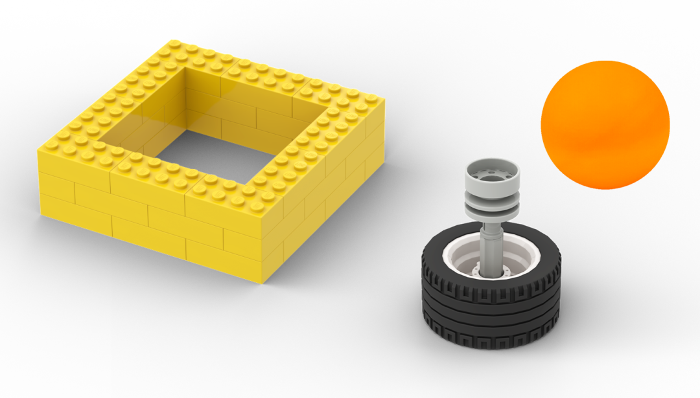
《场地与装置示意图》
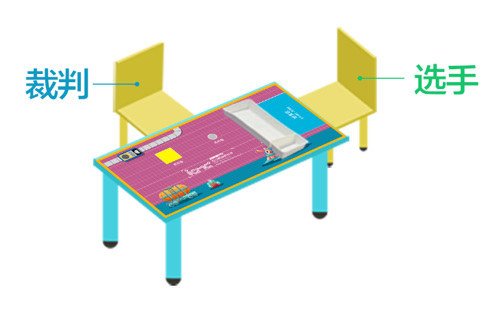
《裁判及选手方位图》
（选手赛前和赛中均可以随意移动椅子位置，可以自行决定在赛桌任意方位，以坐姿或者站姿进行比赛）
智能组8-14岁：智能调整实验桶
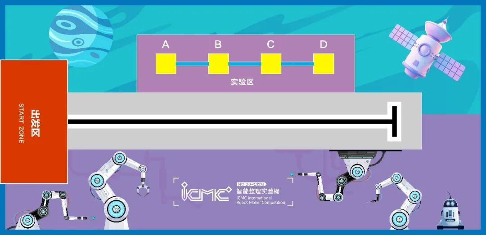
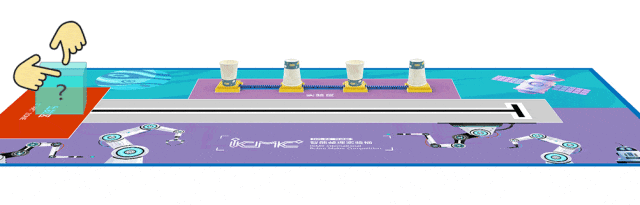
（上图仅为满足条件的多种随机状态的一种）
《任务动画示意》
任务背景：
轨道站仓储室内需要放入一批新实验物料，请制作一个智能机器人，协助将仓储室内口朝下放置实验桶调整为开口向上，为下一步装入物料做准备。
参赛对象：
单人赛，8-14岁机器人学员
场地器材：
1、场地图纸尺寸为 1143-2362mm(±5mm)。
2、赛台规格，内径1143-2362mm(±5mm) ，内高60mm(±5mm)。
3、场地上基础装置及任务物品由比赛组织方提供，实验桶为4个228ml一次性纸杯，杯口直径75mm（±2mm），杯底直径52mm（±2mm），杯高85mm（±2mm）（现场将根据形变情况及时换新。选手也可以自备纸杯，但规格必须与官方一致，并于比赛前交予裁判。）
4、机器人及编程设备选手自带，机器人可在赛前提前搭建好，但是控制程序必须完全由选手现场编写。
5、虽然赛场会尽力确保所有场地的准确性和统一性，但当选手在搭建和编程时，应该考虑场地环境和场地本身出现的一定的可变性和误差。
赛场准备：
1、基础装置（实验桶底座区域）粘贴固定在赛纸上，初始状态如图示，任务物品四个实验桶纸杯位于实验桶底座上，其中两个实验桶桶口朝上，两个实验桶桶口朝下，位置随机。
2、选手将机器人和编程设备置于编程区上准备。选手确认准备完成后（包括打开主机，软件，连接数据线或者蓝牙，机器人状态复位等）等待裁判发令开始比赛。
比赛过程：
1、裁判发令开始比赛启动计时，全程不停表，所有转场、调试、维修、任务环节均连续计时。任务满分完成或选手自行决定结束比赛时，或总限时用完时，计时停止。
2、选手完全现场独立编程，主机、软件中无除基础软件环境外的其他程序，选手需新建空白编程界面，不得使用我的模块、导入模块，否则将先扣除 200 基础分，再现场删除违规程序及模块后再重新进入比赛。
3、计时开始后出现任何硬件或软件问题均需选手自己解决，计时不停止。
4、比赛开始后，选手自主在编程区进行编程，编程完毕后将机器人从编程区放置到赛台出发区位置，按主机上的按键启动程序，机器人出发后需将所有开口朝下的实验桶调整为开口朝上，并放置到实验桶底座上（保持水平直立状态），然后返回到出发区，任务结束。
5、机器人每次出发前，裁判会随机调整实验桶的位置，但会保证其中两个桶口朝下并位于底座中心位置的状态，机器人在运行前垂直投影不得超出出发区范围，启动前机器人高度不得超过 35cm，停止时机器人垂直投影不得超出发区范围。
6、机器人只能通过主机上的按键启动并通过程序自主完成任务。 机器人运行过程中，选手不得通过任何方式干涉机器人运行。
7、机器人出发后，选手可以选择中途结束本次任务重新出发，重新出发前，由裁判复位任务装置。
8、机器人停止运行后，以场地上最终状态进行评分（4个实验桶口全部朝上水平状态置于实验桶底座上，机器人已返回静止于出发区内。）。
9、选手每次更改程序必须将机器从赛台上拿回编程区域，选手更改程序后裁判可能重新随机调整桶口朝下的实验桶的位置。
10、选手可以多次出发执行任务，取得分最高的一次得分为最终任务分。机器人在运行过程中选手触碰机器人或任务装置，或通过无线装置控制机器人，或机器人、任务装置出现损坏，则本次出发任务不得分。
11、控制程序需下载到主机内并只允许通过主机上的按键启动，不可以人为根据现场情况选择性执行某段程序或某条程序，否则不能得到任务分。
12、比赛中不得在场地上放置与机器人分离的各类辅助装置。
比赛分值：
1、比赛总分=时间分+任务分
2、比赛总限时15分钟，基础分1000分，每用时1秒扣1分。
3、任务结束时正确放置的实验桶每个得 1000 分（实验桶桶口朝上，并水平状态位于实验桶底座上），车辆整体投影完全回到出发区并停止运行得500分（机器全程未离开出发区的不得分），任务最高得分为 4500 分。
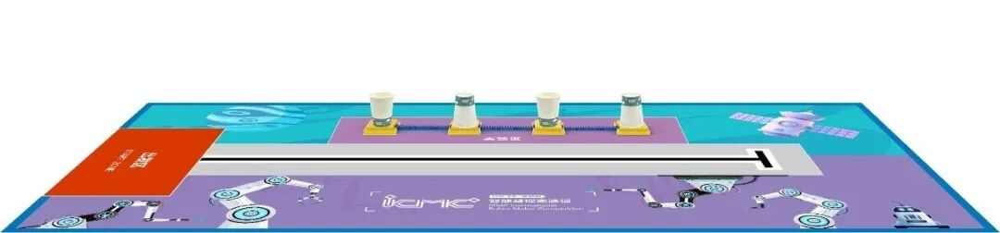
《场地与装置示意图》
（上图仅为满足条件的多种随机状态的一种）
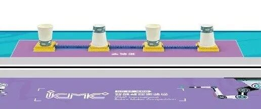
《场地与装置示意图》
（上图仅为满足条件的多种随机状态的一种）
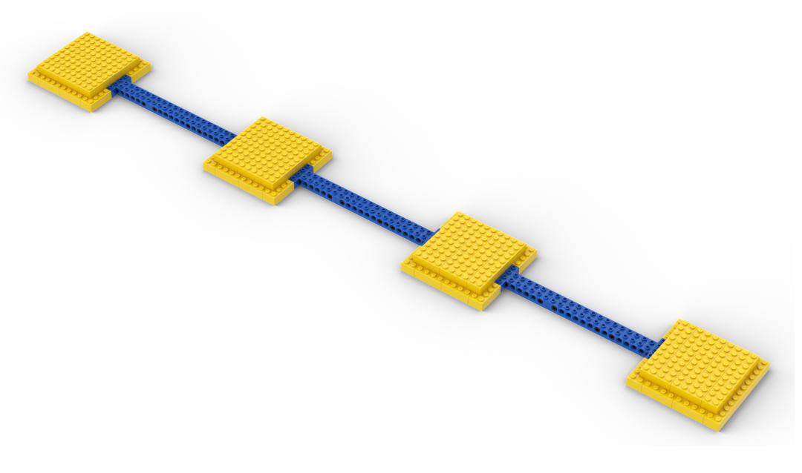
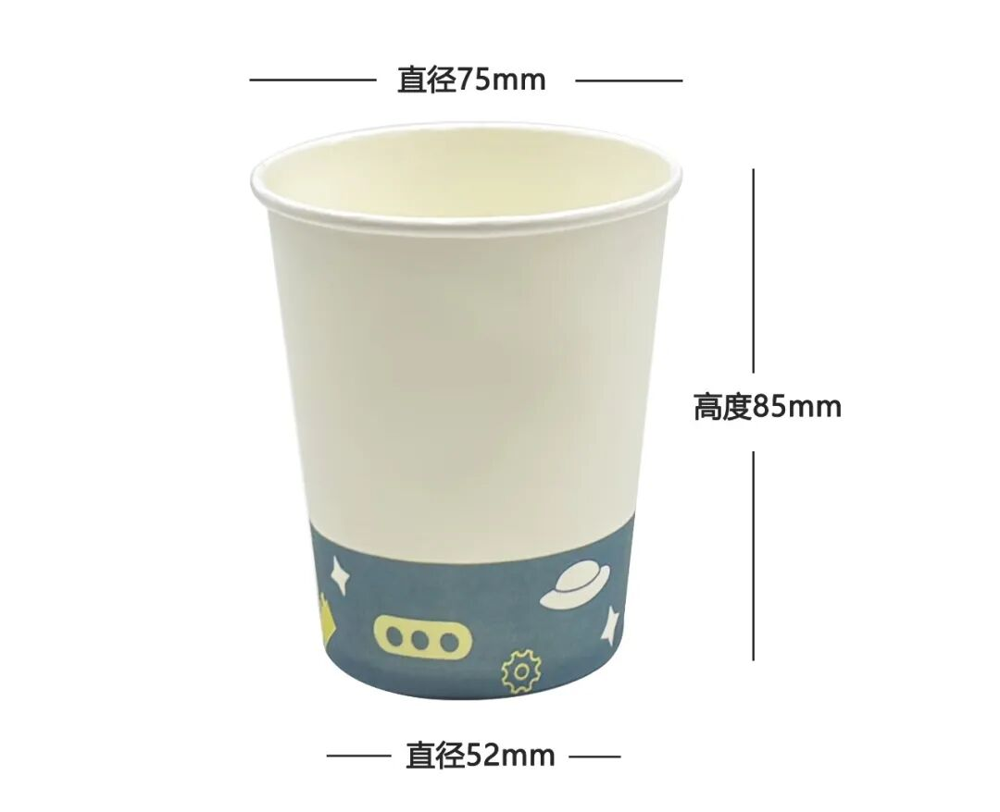
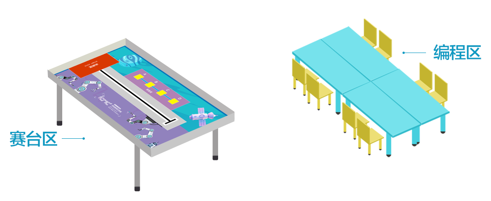
《赛台及编程区示意图》
（编程设备只能留在编程区域，不得挪至赛台区域）
机器人赛项总则
1、ICMC鼓励创新，并锻炼选手“创新、独立、勇敢、乐观、友爱”的素质品质。
2、比赛方案不能违反生活常识，比如伤害人与动物，暴力或危险操作；不得违反基本的机械和工程学常识；否则会被酌情扣分。
3、比赛时场地上基础装置及任务物品所采用的积木为乐高系列，规格与图示一致，但个别零件颜色可能与图示不一致。
4、选手比赛器材不限品牌，但所用零件器材必须为开放式拼装类型，不得为固定款式的成品模型。不得采用3D打印等方式自制特殊零件以获得比赛优势。
5、规则中所述“大颗粒积木”是指两个基础连接点中心距离大于等于16mm的器材系列。
6、比赛开始前，除智能组外，零件应该处于松散且随机状态，选手不得对零件进行分拣和整理。
7、虽然赛事组织者会尽力确保所有场地的准确性和统一性，但当队伍在搭建和编程时，应该考虑场地环境和场地本身出现的一定的可变性和误差。
8、比赛中严禁教练、领队、家长进入比赛区或以任何方式影响比赛，否则将对相应选手进行罚分。
9、裁判委员会对于规则及比赛中出现的争议情节，拥有最终解释及裁判权。
编程组5-14周岁：超级程序员
编程项目分站选拔赛为线上形式
总决赛为现场形式
任务背景：
行星轨道空间站需要一些软件程序员来帮忙维护整个空间站的信息化管理系统，如果你有兴趣加入，请先参加不同软件种类的入职考核吧！
项目分组：
Scratch幼儿组：
年龄：5~7周岁（2019-11-1后出生）
形式：4道实操题，总分100分
赛时：90分钟（每提前1分钟加0.1分）
Scratch儿童组：
年龄：7~9周岁（2017-11-1后出生）
形式：4道实操题，总分100分
赛时：90分钟（每提前1分钟加0.1分）
Scratch少儿组：
年龄：9~11周岁（2015-11-1后出生）
形式：4道实操题，总分100分
赛时：90分钟（每提前1分钟加0.1分）
Python少儿组
年龄：8~11周岁（2015-11-1后出生）
形式：4道实操题，总分100分
赛时：90分钟（每提前1分钟加0.1分）
Python少年组
年龄：11~13周岁（2013-11-1后出生）
形式：4道实操题，总分100分
赛时：90分钟（每提前1分钟加0.1分）
C++少年组
年龄：10-14周岁（2012-11-1后出生）
形式：4道实操题，总分100分
赛时：90分钟（每提前1分钟加0.1分）
编程组评选总则：
1、以比赛日为准，选手不可以超龄参加低龄组比赛。
2、所有地区编程选拔赛均为线上形式，总决赛为现场形式进行。
3、在线选拔赛测试及正赛网址：http://code.icmc100.com
4、作为计时任务赛，选手比规定总限时每提早交卷1分钟，成绩可获0.1分加分。
5、选手报名即表示同意严格遵守本比赛操作规程。
（编程在线选拔赛流程示意）
编程赛总则
1、ICMC鼓励创新，并锻炼选手“创新、独立、勇敢、乐观、友爱”的素质品质。
2、比赛中严禁教练、领队、家长进入比赛区或以任何方式影响比赛，否则将对相应选手进行罚分。
3、裁判委员会对于规则及比赛中出现的争议情节，拥有最终解释及裁判权。
资料下载
二十届ICMC所有赛项详细技术文档请访问以下链接下载，包括机器人赛项搭建示意、编程赛项样卷库等；
二十届技术文档下载地址：http://cs.icmc100.com/maker20.zip
奖项设立
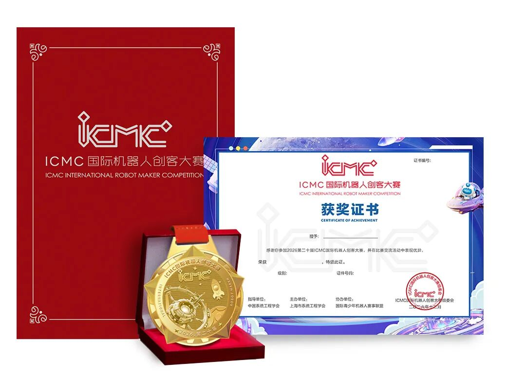
【选手】
特等奖：授予奖状证书+奖牌
一等奖：授予奖状证书+奖牌
二等奖：授予奖状证书+奖牌
三等奖：授予奖状证书+奖牌
【教练】
优秀教练：授予证书
精英教练：授予证书+奖金